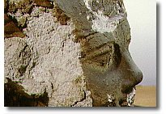
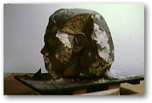
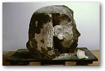

The surface and internal structure of objects can be fragile and may require consolidation to ensure their preservation.
There was a danger that the red and black pigments on this painted sandstone head would be removed during cleaning. To prevent this happening, a solution of synthetic resin was gently applied to the areas at risk. The cured resin fixed the pigments firmly to the stone and the surface could then be cleaned.
Unsuitable storage conditions contributed to the major structural decay of this limestone head.
A deeply penetrating consolidant was used to bind the fragile outer layers to the more stable inner core. Loose flakes were fixed with adhesive and gaps were filled with a synthetic resin and stone powder mixture.
The object is now stored in a suitable and stable environment.
Limestone
head of Amenophis III from Thebes
Mid-eighteenth dynasty. EA 69054
Head of a painted statue of
Mentuhotep II
From Deir el-Bahri, Thebes, Egypt. 11th Dynasty Reg. No: 1906, 1013